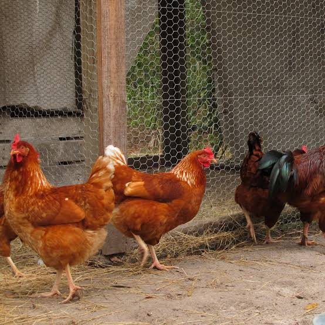

AI Symptom Checker
Record signs of illness and explore preliminary guidance on possible next steps for your flock.
Poultry Health & Veterinary Support
Recognise potential health concerns early, keep flock health records organised, and explore veterinary support — all in one place.
Practical digital tools for better poultry-health management.

Care starts with attention.
Notice symptoms. Keep records. Seek support.
Made for Poultry Farmers
From recording symptoms to tracking vaccinations and finding veterinary support, Kaza-Care brings essential poultry-health tools together in one place.
Record signs of illness and explore preliminary guidance on possible next steps for your flock.
Explore veterinary support options and find professionals to contact about your poultry-health concerns.
Keep health observations and vaccination information organised to support everyday flock management.
A Closer Look at Flock Health
Noticing unusual behaviour is an important first step. Kaza-Care is designed to help you record symptoms, understand possible next steps, and explore veterinary support.
This tool supports awareness and does not replace a qualified veterinary assessment.
Select any signs you've observed in your flock.
Connected to Veterinary Support
When you notice a change in your flock, keeping good records and knowing where to seek professional advice can make the next step clearer.
Start with the Jos area and explore the map experience.
Open the Find a Vet page to explore the available map interface. Listing details should be confirmed before relying on them for veterinary care.
Keep symptom reports, health records and vaccination information organised for easier reference.
Explore options for professional assistance when you have concerns about your flock's health.
Better Care Starts Here
Start organising your poultry-health records, tracking vaccinations and exploring tools for recognising potential health concerns.